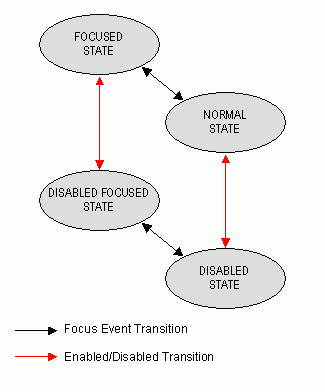

|
HAVi Java APIs 1.1 May 15, 2001 | ||||||||
| PREV CLASS NEXT CLASS | FRAMES NO FRAMES | ||||||||
| SUMMARY: INNER | FIELD | CONSTR | METHOD | DETAIL: FIELD | CONSTR | METHOD | ||||||||
This interface is implemented by all HAVi UI components that can be navigated to by the user (i.e. components which can gain focus).
Subclasses of HComponent which
implement HNavigable must respond to
HFocusEvent
events.
Applications should assume that classes which implement HNavigable can only generate events of
the type HFocusEvent in
response to other types of input event.
An application may add one or more HFocusListener listeners to the
component. The focusGained and focusLost methods of the HFocusListener are invoked whenever the HNavigable gains or loses focus.
An HNavigable has an arbitrary focus
traversal table associated with it (see setMove and getMove). This mechanism allows
the four-way focus behavior of a set of components to be set (see
setFocusTraversal,
setMove and getMove).
HAVi focus events are discussed in detail in the HNavigationInputPreferred
interface description.
The following interaction states are valid for this HNavigable component:
The state machine diagram below shows the valid state
transitions for an HNavigable component.
|  |
HNavigable interface. These classes shall all
generate HFocusEvent events
in addition to any other events specified in the respective class
descriptions.
HAnimation
HIcon
HText
HRange
HGraphicButton
HTextButton
HToggleButton
HListGroup
HSinglelineEntry
HMultilineEntry
HRangeValue
HNavigationInputPreferred,
HFocusEvent,
HFocusListener| Method Summary | |
void |
addHFocusListener(HFocusListener l)
Adds the specified HFocusListener to
receive HFocusEvent events sent from
this HNavigable: If the listener has
already been added further calls will add further references to the listener,
which will then receive multiple copies of a single event. |
HSound |
getGainFocusSound()
Get the sound associated with the gain focus event. |
HSound |
getLoseFocusSound()
Get the sound associated with the lost focus event. |
HNavigable |
getMove(int keyCode)
Provides the HNavigable object
that is navigated to when a particular key is pressed. |
boolean |
isSelected()
Indicates if this component has focus. |
void |
removeHFocusListener(HFocusListener l)
Removes the specified HFocusListener
so that it no longer receives HFocusEvent events from this HNavigable. |
void |
setFocusTraversal(HNavigable up,
HNavigable down,
HNavigable left,
HNavigable right)
Set the focus control for an HNavigable component. |
void |
setGainFocusSound(HSound sound)
Associate a sound with gaining focus, i.e. |
void |
setLoseFocusSound(HSound sound)
Associate a sound with losing focus, i.e. |
void |
setMove(int keyCode,
HNavigable target)
Defines the navigation path from the current HNavigable to another HNavigable when a particular key is
pressed. |
| Methods inherited from interface org.havi.ui.HNavigationInputPreferred |
getNavigationKeys, processHFocusEvent |
| Method Detail |
public void setMove(int keyCode,
HNavigable target)
HNavigable to another HNavigable when a particular key is
pressed. Note that setFocusTraversal is
equivalent to multiple calls to setMove, where the key codes
VK_UP, VK_DOWN, VK_LEFT,
VK_RIGHT are used.
keyCode - The key code of the pressed key. Any numerical
keycode is allowed, but the platform may not be able to
generate all keycodes. Application authors should only use keys
for which HRcCapabilities.isSupported() or
HKeyCapabilities.isSupported() returns true.target - The target HNavigable object that should be navigated to. If a target is
to be removed from a particular navigation path, then
null should be specified.public HNavigable getMove(int keyCode)
HNavigable object
that is navigated to when a particular key is pressed.keyCode - The key code of the pressed key.HNavigable
object, or if no HNavigable is
associated with the keyCode then returns null.
public void setFocusTraversal(HNavigable up,
HNavigable down,
HNavigable left,
HNavigable right)
HNavigable component. Note setFocusTraversal is a
convenience function for application programmers where a standard
up, down, left and right focus traversal between components is
required.
Note setFocusTraversal is equivalent to multiple calls to setMove, where the key codes
VK_UP, VK_DOWN, VK_LEFT, VK_RIGHT are used.
Note that this
API does not prevent the creation of "isolated"
HNavigable components --- authors
should endeavor to avoid confusing the user.
up - The HNavigable component
to move to, when the user generates a VK_UP KeyEvent. If there is no HNavigable component to move
"up" to, then null should be specified.down - The HNavigable
component to move to, when the user generates a VK_DOWN KeyEvent. If there
is no HNavigable component to move
"down" to, then null should be specified.left - The HNavigable
component to move to, when the user generates a VK_LEFT KeyEvent. If there
is no HNavigable component to move
"left" to, then null should be specified.right - The HNavigable
component to move to, when the user generates a VK_RIGHT KeyEvent. If there
is no HNavigable component to move
"right" to, then null should be specified.public boolean isSelected()
true if the component has focus, otherwise
returns false.public void setGainFocusSound(HSound sound)
HNavigable receives a
HFocusEvent event of type
FOCUS_GAINED. This sound will start to be played
when an object implementing this interface gains focus. It is
not guaranteed to be played to completion. If the object
implementing this interface loses focus before the audio
completes playing, the audio will be truncated. Applications
wishing to ensure the audio is always played to completion must
implement special logic to slow down the focus transitions.
By default, an HNavigable object
does not have any gain focus sound associated with it.
Note that the ordering of playing sounds is dependent on the order of the focus lost, gained events.
sound - the sound to be played, when the component gains
focus. If sound content is already set, the original content is
replaced. To remove the sound specify a null HSound.public void setLoseFocusSound(HSound sound)
HNavigable receives a
HFocusEvent event of type
FOCUS_LOST. This sound will start to be played when an object
implementing this interface loses focus. It is not guaranteed to be
played to completion. It is implementation dependent whether and when
this sound will be truncated by any gain focus sound played by the next
object to gain focus. By default, an HNavigable object does not have any
lose focus sound associated with it.
Note that the ordering of playing sounds is dependent on the order of the focus lost, gained events.
sound - the sound to be played, when the component loses
focus. If sound content is already set, the original content is
replaced. To remove the sound specify a null HSound.public HSound getGainFocusSound()
public HSound getLoseFocusSound()
public void addHFocusListener(HFocusListener l)
HFocusListener to
receive HFocusEvent events sent from
this HNavigable: If the listener has
already been added further calls will add further references to the listener,
which will then receive multiple copies of a single event.l - the HFocusListener to addpublic void removeHFocusListener(HFocusListener l)
HFocusListener
so that it no longer receives HFocusEvent events from this HNavigable. If
the specified listener is not registered, the method has no effect. If
multiple references to a single listener have been registered it should be
noted that this method will only remove one reference per call.l - the HFocusListener to remove
|
HAVi Java APIs 1.1 May 15, 2001 | ||||||||
| PREV CLASS NEXT CLASS | FRAMES NO FRAMES | ||||||||
| SUMMARY: INNER | FIELD | CONSTR | METHOD | DETAIL: FIELD | CONSTR | METHOD | ||||||||